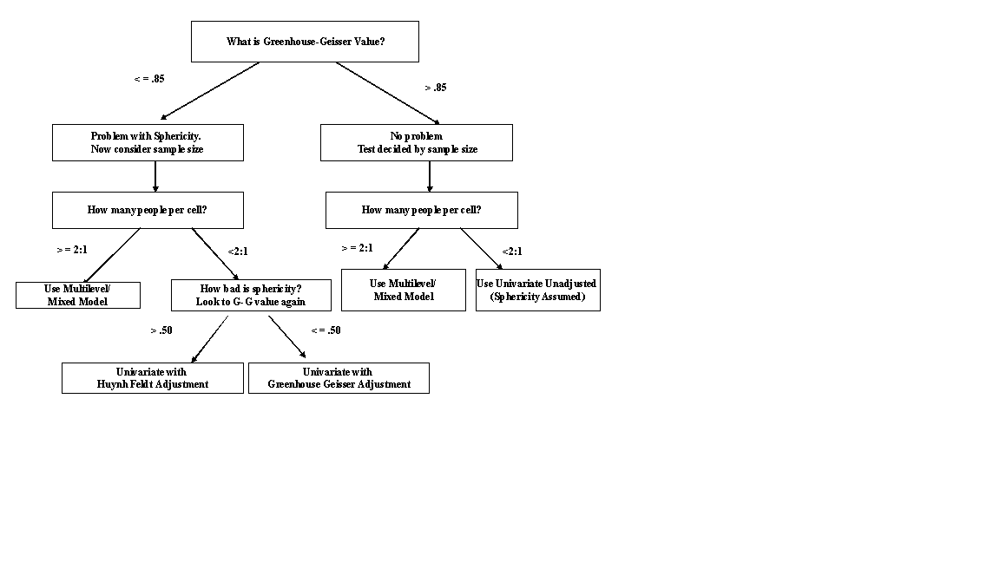

Within Subjects ANOVA
Overview
This tutorial focuses on one and two factor within subjects ANOVA. I also discuss effect sizes, simple effects tests, assumptions, and APA style.
NOTE: THIS TUTORIAL RENDERS BEST IN A BROWSER WINDOW. Use the button in the upper left hand corner to open in browser window.
The PowerPoint slides for the presentation in the videos are on Canvas if you want a standalone copy.
The videos (as well as others) can also be found on my YouTube channel https://www.youtube.com/channel/UC5kDZTyHZlgSgSEa3YQXOi
Credit to our oldest, Ernesto Aberson for his work creating the
Learning Objectives
Define the different types of Sums of Square in the within subjects context
Explore links between paired t-test approaches and within subject ANOVA
Explain the conditions for applying the within subjects ANOVA
Compute Sums of Squares, degrees of freedom, Mean Square, and F
Apply the above procedures to making decisions about null hypotheses
Graph and interpret interaction effects
Use R to compute ANOVA and eta-squared
Apply simple effects tests to formally evaluation interactions
Test assumptions for a within subjects ANOVA
Data
West is the datafile used in exercises. These data examine changes in body image following an intervention from pre to post. Half of the participants interacted in a bar setting with other participants (the bar was otherwise empty) while naked and the others interacted similarly (in a different room) while clothed condition.
Gaither examines support for Hillary Clinton before (pre) and after (post) the 2016 election and how such relationships are affected by participant gender (gender).
Both datafiles will be used for several examples.
Packages
This tutorial uses the following new packages:
lsrfor effect sizescarfor ANOVA computationsezfor running ANOVAlme4for linear mixed models
Video I Introduction
Quiz 1
Video II Within Subjects ANOVA
Quiz
Video III Calculations
Exercise Calculations
\(\large SS_{Total}=\Sigma(x-\bar{x}_t)^2\)
\(\large SS_{Between}=\Sigma n_{cell}(\bar{x}_{cell}-\bar{x}_t)^2\)
\(\large SS_{Within}=\Sigma(x-\bar{x}_{cell})^2\)
\(\large SS_{A}=\Sigma n_{A}(\bar{x}_{A}-\bar{x}_t)^2\)
\(\large SS_{B}=\Sigma n_{B}(\bar{x}_{B}-\bar{x}_t)^2\)
\(\large SS_{AxB}=SS_{BG}-SS_{A}-SS_{B}\)
\(\large SS_{subject}=\Sigma t(\bar{x}_{block}-\bar{x}_t)^2\)
\(\large SS_{error}=SS_{within}-SS_{subjects}\)
\(\large MS_{Between}=\frac{SS_{Between}}{df_{Between}}\)
\(\large MS_{Error}=\frac{SS_{Error}}{df_{Error}}\)
\(\large MS_{Between}=\frac{SS_{Between}}{df_{Between}}\)
\(\large df_{between}=levels-1\)
\(\large df_{error}=(people-levels)\)
\(\large F=\frac{MS_{between}}{MS_{error}}\)
| time1 | time2 | time3 |
|---|---|---|
| 2 | 6 | 8 |
| 4 | 8 | 12 |
| 6 | 10 | 16 |
Video IV: Example and R
One Factor Within ANOVA in R
Withing subjects ANOVA requires a bit of data restructuring. For most applications, we use “wide” format wherein every row represents one person and we have a column for each variable. Within subjects approaches generally require “long” format where each person will be in multiple rows (one for each level of the within subject factor).
The first line of code creates an ID number for us. This is essential because it is the only way we know who goes with what.
The second moves us from wide to long format. key is the name for a new variable that establishes the within subjects condition and value is what we are calling our new DV. -ID makes sure ID is repeated each time a person had data.
Next we need to make sure all factors are converted to factors and all numeric data are converted to numeric.
The final line runs the anova using the ez package. dv, wid, and within are the relevant variables for analysis.
Gaither$ID<-seq(1:191)
Gaitherlong<-tidyr::gather(Gaither,key="Condition",value="Censor",-ID, -gender)
Gaitherlong$Censor<-as.numeric(Gaitherlong$Censor)
Gaitherlong$Condition<-as.factor(Gaitherlong$Condition)
modelGaither<-ez::ezANOVA(data=Gaitherlong, dv=.(Censor), wid=.(ID), within = .(Condition), type=3, detailed=TRUE)## Registered S3 methods overwritten by 'lme4':
## method from
## cooks.distance.influence.merMod car
## influence.merMod car
## dfbeta.influence.merMod car
## dfbetas.influence.merMod car## Warning: Converting "ID" to factor for ANOVA.modelGaither## $ANOVA
## Effect DFn DFd SSn SSd F p p<.05
## 1 (Intercept) 1 190 11235.4474 227.70029 9375.196493 1.207744e-163 *
## 2 Condition 1 190 0.6112 55.10505 2.107393 1.482380e-01
## ges
## 1 0.975447201
## 2 0.002156543Exercise
Using the West data, predict attitudes body_image from time. You will need to restructure the data as noted above (there are 51 cases).
load(file="G:/My Drive/ANOVAtutorials/data/West.RData")
West$ID<-seq(1:51)
Westlong<-tidyr::gather(West,key="Time",value="body_image",-ID, -condition)
Westlong$Time<-as.factor(Westlong$Time)
Westlong$body_image<-as.numeric(Westlong$body_image)
modelWest<-ez::ezANOVA(data=Westlong, dv=.(body_image), wid=.(ID), within = .(Time), type=3, detailed=TRUE)
modelWestQuiz
## Warning: Converting "ID" to factor for ANOVA.## $ANOVA
## Effect DFn DFd SSn SSd F p p<.05
## 1 (Intercept) 1 50 1096.7008980 87.96727 623.3573711 6.830935e-30 *
## 2 Time 1 50 0.2258824 19.06445 0.5924177 4.451069e-01
## ges
## 1 0.91108348
## 2 0.00210598## [1] 3.326078## [1] 3.231961Video 5: Sphericity, two within subjects factors, and simple effects
Sphericity Exercise
Recall the following decision chart from the ppt slides.

Using the dataset called memory assess the sphericity assumption. These data represent three measurement time points. A pretest, a posttest following implimentation of a memory training course, and a three month followup. Variables are id, Memory, and Condition.
Recall the format of the code below. This will automatically generate sphericity values when we have more than three levels.
modelWest<-ez::ezANOVA(data=Westlong, dv=.(body_image), wid=.(ID), within = .(Time), type=3, detailed=TRUE)## Warning: Converting "ID" to factor for ANOVA.modelWest## $ANOVA
## Effect DFn DFd SSn SSd F p p<.05
## 1 (Intercept) 1 50 1096.7008980 87.96727 623.3573711 6.830935e-30 *
## 2 Time 1 50 0.2258824 19.06445 0.5924177 4.451069e-01
## ges
## 1 0.91108348
## 2 0.00210598Use the memory dataset to address the sphericity assumption. These data are already restructured.
xx<-ez::ezANOVA(data=memory, dv=.(Memory), wid=.(id), within = .(Condition), type=3, detailed=TRUE)
xxQuiz
xx<-ez::ezANOVA(data=memory, dv=.(Memory), wid=.(id), within = .(Condition), type=3, detailed=TRUE)## Warning: Converting "id" to factor for ANOVA.xx## $ANOVA
## Effect DFn DFd SSn SSd F p p<.05 ges
## 1 (Intercept) 1 49 10746.558 362.3844 1453.1018 4.387437e-38 * 0.9080764
## 2 Condition 2 98 3935.572 725.4785 265.8149 2.599545e-40 * 0.7834424
##
## $`Mauchly's Test for Sphericity`
## Effect W p p<.05
## 2 Condition 0.5705317 1.414866e-06 *
##
## $`Sphericity Corrections`
## Effect GGe p[GG] p[GG]<.05 HFe p[HF] p[HF]<.05
## 2 Condition 0.6995608 5.664671e-29 * 0.7138112 1.640343e-29 *Doubly Within with Simple effects in R
Returning to the video example, we see the code is simply expanded to include a second factor. Simple effects tests are most easily conducted on the original data in wide format.
options(contrasts=c("contr.helmert", "contr.poly"))
xx<-ez::ezANOVA(data=long2F, dv=.(risk), wid=.(id), within = .(time,condom), type=3, detailed=TRUE)## Warning: Converting "id" to factor for ANOVA.## Warning: Converting "condom" to factor for ANOVA.xx## $ANOVA
## Effect DFn DFd SSn SSd F p p<.05
## 1 (Intercept) 1 23 156009.0052 20340.120 176.410324 2.841205e-12 *
## 2 time 3 69 2726.9740 5808.401 10.798222 6.660971e-06 *
## 3 condom 1 23 11703.1302 5946.995 45.261851 7.310587e-07 *
## 4 time:condom 3 69 741.5156 5132.859 3.322682 2.467716e-02 *
## ges
## 1 0.80734382
## 2 0.06825054
## 3 0.23917372
## 4 0.01952904
##
## $`Mauchly's Test for Sphericity`
## Effect W p p<.05
## 2 time 0.6720143 0.124961654
## 4 time:condom 0.4844694 0.007691289 *
##
## $`Sphericity Corrections`
## Effect GGe p[GG] p[GG]<.05 HFe p[HF] p[HF]<.05
## 2 time 0.7762642 5.191685e-05 * 0.8690192 2.211548e-05 *
## 4 time:condom 0.6880765 4.318602e-02 * 0.7569423 3.813883e-02 *t.test(twofactorwithin$t1c1,twofactorwithin$t1c2, paired=TRUE)##
## Paired t-test
##
## data: twofactorwithin$t1c1 and twofactorwithin$t1c2
## t = -3.6239, df = 23, p-value = 0.001424
## alternative hypothesis: true difference in means is not equal to 0
## 95 percent confidence interval:
## -14.595747 -3.987587
## sample estimates:
## mean of the differences
## -9.291667cohensD(twofactorwithin$t1c1,twofactorwithin$t1c2,method="paired")## [1] 0.7397186t.test(twofactorwithin$t2c1,twofactorwithin$t2c2, paired=TRUE)##
## Paired t-test
##
## data: twofactorwithin$t2c1 and twofactorwithin$t2c2
## t = -5.7347, df = 23, p-value = 7.688e-06
## alternative hypothesis: true difference in means is not equal to 0
## 95 percent confidence interval:
## -22.16847 -10.41487
## sample estimates:
## mean of the differences
## -16.29167cohensD(twofactorwithin$t2c1,twofactorwithin$t2c2,method="paired")## [1] 1.170598t.test(twofactorwithin$t3c1,twofactorwithin$t3c2, paired=TRUE)##
## Paired t-test
##
## data: twofactorwithin$t3c1 and twofactorwithin$t3c2
## t = -4.6663, df = 23, p-value = 0.0001069
## alternative hypothesis: true difference in means is not equal to 0
## 95 percent confidence interval:
## -24.235730 -9.347603
## sample estimates:
## mean of the differences
## -16.79167cohensD(twofactorwithin$t3c1,twofactorwithin$t3c2,method="paired")## [1] 0.9525038t.test(twofactorwithin$t4c1,twofactorwithin$t4c2, paired=TRUE)##
## Paired t-test
##
## data: twofactorwithin$t4c1 and twofactorwithin$t4c2
## t = -5.669, df = 23, p-value = 9.018e-06
## alternative hypothesis: true difference in means is not equal to 0
## 95 percent confidence interval:
## -27.41188 -12.75479
## sample estimates:
## mean of the differences
## -20.08333cohensD(twofactorwithin$t4c1,twofactorwithin$t4c2,method="paired")## [1] 1.15718Video 6: Linear Mixed Models
LMM with R
To run linear mixed models, we can use the nlme package (lme4 is another popular one). The basic analysis structure involves running a baseline (a.k.a. intercept only model) that has no factors in it, running a model with your factor(s), and then comparing the models to address signficance.
library(nlme)##
## Attaching package: 'nlme'## The following object is masked from 'package:dplyr':
##
## collapsemodel1_baseline<-lme(risk~1, random = ~1|id/time, data=long2F,method="ML")
model1_time<-lme(risk~time, random = ~1|id/time, data=long2F,method="ML")
print(anova(model1_baseline,model1_time))## Model df AIC BIC logLik Test L.Ratio p-value
## model1_baseline 1 4 1596.922 1609.952 -794.4611
## model1_time 2 7 1587.988 1610.790 -786.9939 1 vs 2 14.93444 0.0019Exercise
Using the memory dataset, run a linear mixed model.
library(nlme)
model1_baseline<-lme(Memory~1, random = ~1|id/Condition, data=memory,method="ML")
model1_Condition<-lme(Memory~Condition, random = ~1|id/Condition, data=memory,method="ML")
print(anova(model1_baseline,model1_Condition))